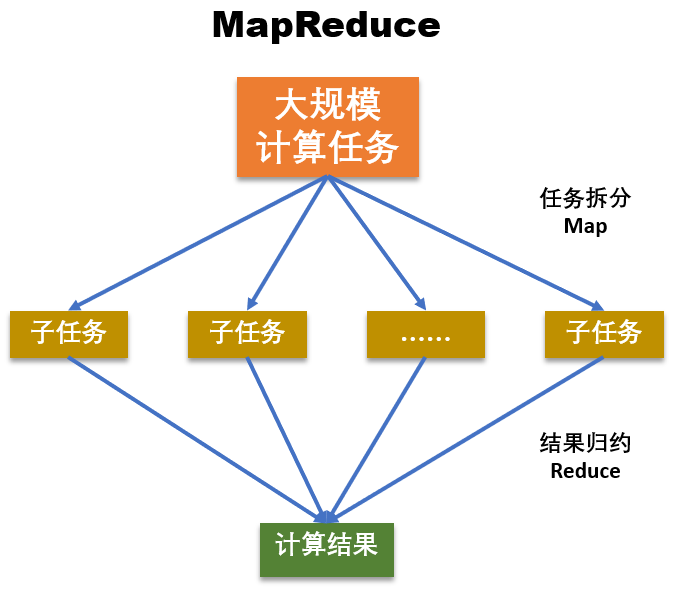
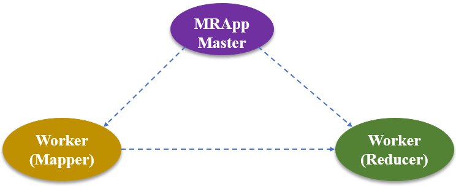
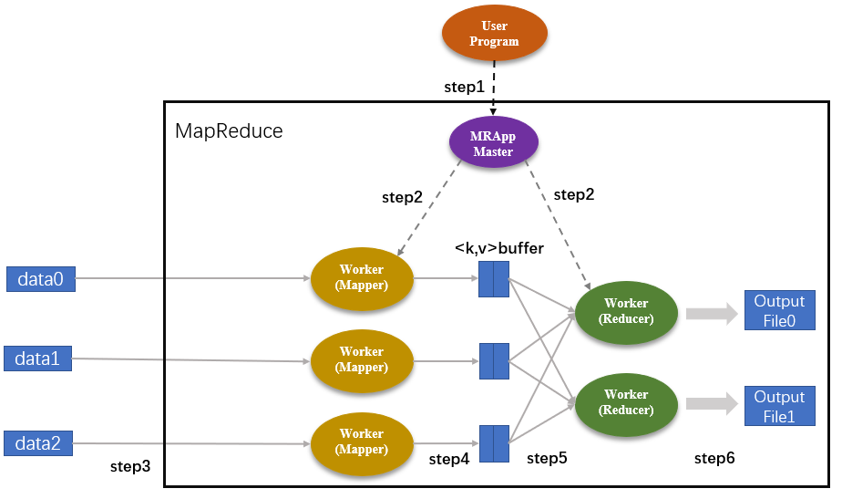
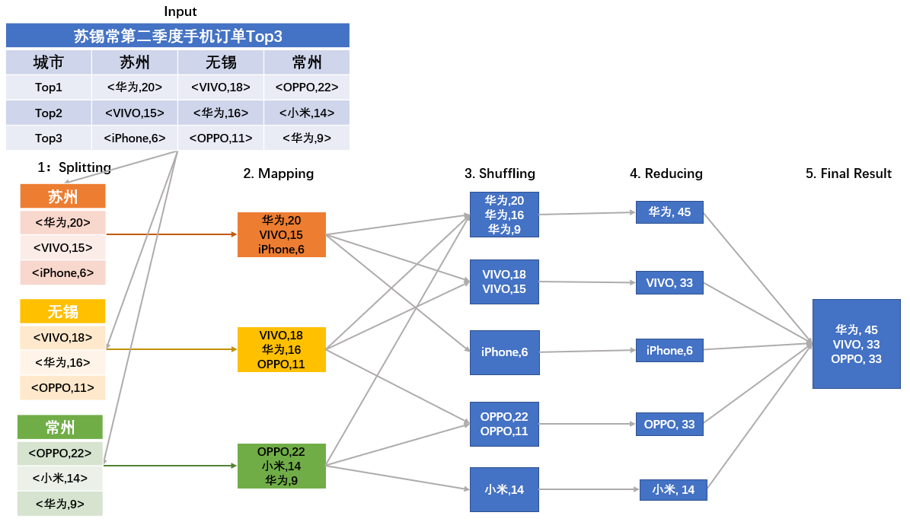
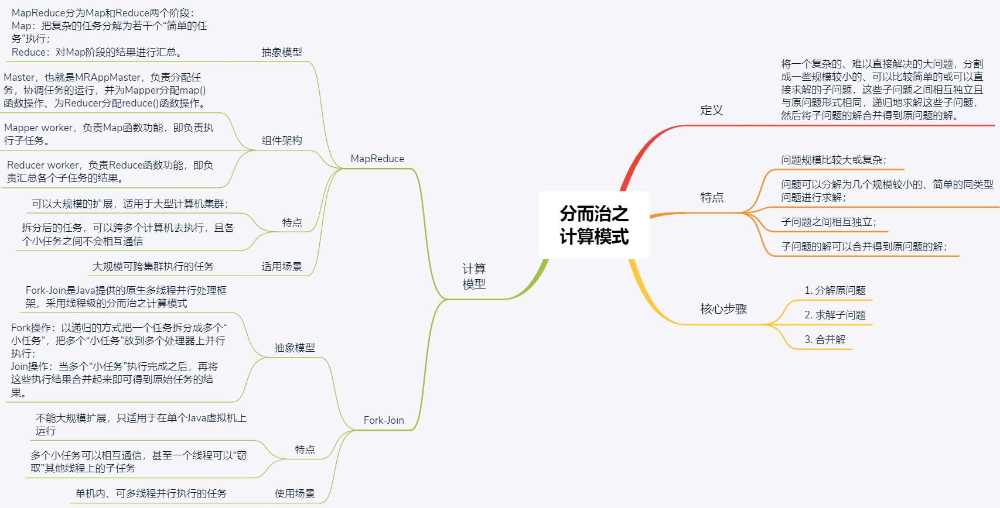

- 00 开篇词 四纵四横，带你透彻理解分布式技术.md.html
- 01 分布式缘何而起：从单兵，到游击队，到集团军.md.html
- 02 分布式系统的指标：啥是分布式的三围.md.html
- 03 分布式互斥：有你没我，有我没你.md.html
- 04 分布式选举：国不可一日无君.md.html
- 05 分布式共识：存异求同.md.html
- 06 分布式事务：All or nothing.md.html
- 07 分布式锁：关键重地，非请勿入.md.html
- 08 分布式技术是如何引爆人工智能的？.md.html
- 09 分布式体系结构之集中式结构：一人在上，万人在下.md.html
- 10 分布式体系结构之非集中式结构：众生平等.md.html
- 11 分布式调度架构之单体调度：物质文明、精神文明一手抓.md.html
- 12 分布式调度架构之两层调度：物质文明、精神文明两手抓.md.html
- 13 分布式调度架构之共享状态调度：物质文明、精神文明多手协商抓.md.html
- 14 答疑篇：分布式事务与分布式锁相关问题.md.html
- 15 分布式计算模式之MR：一门同流合污的艺术.md.html
- 16 分布式计算模式之Stream：一门背锅的艺术.md.html
- 17 分布式计算模式之Actor：一门甩锅的艺术.md.html
- 18 分布式计算模式之流水线：你方唱罢我登场.md.html
- 19 分布式通信之远程调用：我是你的千里眼.md.html
- 20 分布式通信之发布订阅：送货上门.md.html
- 21 分布式通信之消息队列：货物自取.md.html
- 22 答疑篇：分布式体系架构与分布式计算相关问题.md.html
- 23 CAP理论：这顶帽子我不想要.md.html
- 24 分布式数据存储系统之三要素：顾客、导购与货架.md.html
- 25 数据分布方式之哈希与一致性哈希：“掐指一算”与“掐指两算”的事.md.html
- 26 分布式数据复制技术：分身有术.md.html
- 27 分布式数据之缓存技术：“身手钥钱”随身带.md.html
- 28 分布式高可靠之负载均衡：不患寡，而患不均.md.html
- 29 分布式高可靠之流量控制：大禹治水，在疏不在堵.md.html
- 30 分布式高可用之故障隔离：当断不断，反受其乱.md.html
- 31 分布式高可用之故障恢复：知错能改，善莫大焉.md.html
- 32 答疑篇：如何判断并解决网络分区问题？.md.html
- 33 知识串联：以购买火车票的流程串联分布式核心技术.md.html
- 34 搭建一个分布式实验环境：纸上得来终觉浅，绝知此事要躬行.md.html
- 特别放送 Jackey：寄语天涯客，轻寒底用愁.md.html
- 特别放送 分布式下的一致性杂谈.md.html
- 特别放送 崔新：追根溯源，拨开云雾见青天.md.html
- 特别放送 徐志强：学习这件事儿，不到长城非好汉.md.html
- 特别放送 那些你不能错过的分布式系统论文.md.html
- 结束语 为什么说提升职业竞争力要从尊重、诚实开始？.md.html
- 捐赠
15 分布式计算模式之MR：一门同流合污的艺术
你好，我是聂鹏程。今天，我来继续带你打卡分布式核心技术。
我在第12篇文章中与你介绍两层调度时提到，Mesos的第二层调度是由Framework完成的。这里的Framework通常就是计算框架，比如Hadoop、Spark等。用户基于这些计算框架，可以完成不同类型和规模的计算。
那么，在接下来的4篇文章，我们就要进入“第三站：分布式计算技术”了。在这一站，我将与你详细介绍分布式领域中的4种计算模式，包括MapReduce、Stream、Actor和流水线。而今天这篇文章，我们就先从MR模式开始吧。
Hadoop这个框架主要用于解决海量数据的计算问题。那么，它是如何做到海量数据计算的呢？你可能会想，既然是海量数据，规模这么大，那就分成多个进程，每个进程计算一部分，然后汇总一下结果，就可以提升运算速度了。其实，整个计算流程，我们可以很形象地用一个词来解释，就是“同流合污“。
没错，就是这种想法，在分布式领域中就叫作MR模式，即Map Reduce模式。接下来，我们就一起揭开MR模式的神秘面纱吧。
什么是分而治之？
分而治之（Divide-and-Conquer），是计算机处理问题的一个很重要的思想，简称为分治法。
顾名思义，分治法就是将一个复杂的、难以直接解决的大问题，分割成一些规模较小的、可以比较简单的或直接求解的子问题，这些子问题之间相互独立且与原问题形式相同，递归地求解这些子问题，然后将子问题的解合并得到原问题的解。
比如，现在要统计全中国的人口数，由于中国的人口规模很大，如果让工作人员依次统计每个省市的人口数，工作量会非常大。在实际统计中，我们通常会按照省分别统计，比如湖南省的工作人员统计湖南省的人口数，湖北省的工作人员统计湖北省的人口数等，然后汇总各个省的人口数，即可得到全国人口数。
这，就是一个非常好的分而治之的例子。
当然，这种分治的思想还广泛应用于计算机科学的各个领域中，分布式领域中的很多场景和问题也非常适合采用这种思想解决，并为此设计出了很多计算框架。比如，Hadoop中的MapReduce。
那么，在分布式领域，具体有哪些问题适合采用分治法呢？要回答这个问题，我们先看下适合分治法的问题具有哪些特征吧。
- 问题规模比较大或复杂，且问题可以分解为几个规模较小的、简单的同类型问题进行求解；
- 子问题之间相互独立，不包含公共子问题；
- 子问题的解可以合并得到原问题的解。
根据这些特征，我们可以想到，诸如电商统计全国商品数量时，按区域或省市进行统计，然后将统计结果合并得到最终结果等大数据处理场景，均可以采用分治法。
同时，根据这些特征，我们可以推导出，采用分治法解决问题的核心步骤是：
- 分解原问题。将原问题分解为若干个规模较小，相互独立，且与原问题形式相同的子问题。
- 求解子问题。若子问题规模较小且容易被解决则直接求解，否则递归地求解各个子问题。
- 合并解，就是将各个子问题的解合并为原问题的解。
接下来，我们就一起看看分布式系统中分治法的原理和应用吧。
分治法的原理
分布式原本就是为处理大规模应用而生的，所以基于分布式系统，如何分而治之地处理海量数据就是分布式领域中的一个核心问题。
Google提出的MapReduce分布式计算模型（Hadoop MapReduce是Google的开源实现），作为分治法的典型代表，最开始用于搜索领域，后来被广泛用于解决各种海量数据的计算问题。下面，我将以MapReduce为例，带你了解分治法的抽象模型、工作原理和实践应用。
抽象模型
如下图所示，MapReduce分为Map和Reduce两个核心阶段，其中Map对应“分”，即把复杂的任务分解为若干个“简单的任务”执行；Reduce对应着“合”，即对Map阶段的结果进行汇总。

在第一阶段，也就是Map阶段，将大数据计算任务拆分为多个子任务，拆分后的子任务通常具有如下特征：
- 相对于原始任务来说，划分后的子任务与原任务是同质的，比如原任务是统计全国人口数，拆分为统计省的人口数子任务时，都是统计人口数；并且，子任务的数据规模和计算规模会小很多。
- 多个子任务之间没有依赖，可以独立运行、并行计算，比如按照省统计人口数，统计河北省的人口数和统计湖南省的人口数之间没有依赖关系，可以独立、并行地统计。
第二阶段，也就是Reduce阶段，第一阶段拆分的子任务计算完成后，汇总所有子任务的计算结果，以得到最终结果。也就是，汇总各个省统计的人口数，得到全国的总人口数。
MapReduce工作原理
那么，在MapReduce里，各个组件是如何分工完成一个复杂任务的呢？为了解答这个问题，我先带你了解一下MapReduce的组件结构。

如上图所示，MapReduce主要包括以下三种组件：
- Master，也就是MRAppMaster，该模块像一个大总管一样，独掌大权，负责分配任务，协调任务的运行，并为Mapper分配map()函数操作、为Reducer分配reduce()函数操作。
- Mapper worker，负责Map函数功能，即负责执行子任务。
- Reducer worker，负责Reduce函数功能，即负责汇总各个子任务的结果。
基于这三种组件，MapReduce的工作流程如下所示：

程序从User Program开始进入MapReduce操作流程。其中图中的“step1，step2，…，step6”表示操作步骤。
step1：User Program将任务下发到MRAppMaster中。然后，MRAppMaster执行任务拆分步骤，把User Program下发的任务划分成M个子任务（M是用户自定义的数值）。假设，MapReduce函数将任务划分成了5个，其中Map作业有3个，Reduce作业有2个；集群内的MRAppMaster以及Worker节点都有任务的副本。
step2：MRAppMaster分别为Mapper和Reducer分配相应的Map和Reduce作业。Map作业的数量就是划分后的子任务数量，也就是3个；Reduce作业是2个。
step3：被分配了Map作业的Worker，开始读取子任务的输入数据，并从输入数据中抽取出
step4：map()函数的输出结果存储在环形缓冲区kvBuffer中，这些Map结果会被定期写入本地磁盘中，被存储在R个不同的磁盘区。这里的R表示Reduce作业的数量，也是由用户定义的。在这个案例中，R=2。此外，每个Map结果的存储位置都会上报给MRAppMaster。
step5：MRAppMaster通知Reducer它负责的作业在哪一个分区，Reducer远程读取相应的Map结果，即中间键值对。当Reducer把它负责的所有中间键值对都读过来后，首先根据键值对的key值对中间键值对进行排序，将相同key值的键值对聚集在一起，从而有利于Reducer对Map结果进行统计。
step6：Reducer遍历排序后的中间键值对，将具有相同key值的键值对合并，并将统计结果作为输出文件存入负责的分区中。
从上述流程可以看出，整个MapReduce的工作流程主要可以概括为5个阶段，即：Input（输入）、Splitting（拆分）、Mapping（映射）、Reducing（化简）以及Final Result（输出）。
所有MapReduce操作执行完毕后，MRAppMaster将R个分区的输出文件结果返回给User Program，用户可以根据实际需要进行操作。比如，通常并不需要合并这R个输出文件，而是将其作为输入交给另一个MapReduce程序处理。
MapReduce实践应用
通过上述的流程描述，你大概已经知道MapReduce的工作流程了。接下来，我和你分享一个电商统计用户消费记录的例子，再帮你巩固一下MapReduce的功能吧。
需要注意的是，为了方便理解，我对下面用的数据做了一定的处理，并不完全是真实场景中的数据。
每隔一段时间，电商都会统计该时期平台的订单记录，从而分析用户的消费倾向。在不考虑国外消费记录的前提下，全国范围内的订单记录已经是一个很大规模的工程了。
在前面的文章中我也提到过，电商往往会在每个省份、多个城市分布式地部署多个服务器，用于管理某一地区的平台数据。因此，针对全国范围内的消费统计，可以拆分成对多个省份的消费统计，并再一次细化到统计每一个城市的消费记录。
为方便描述，假设我们现在要统计苏锡常地区第二季度手机订单数量Top3的品牌。我们来看看具体的统计步骤吧。
- 任务拆分（Splitting阶段）。根据地理位置，分别统计苏州、无锡、常州第二季度手机订单Top3品牌，从而将大规模任务划分为3个子任务。
- 通过循环调用map()函数，统计每个品牌手机的订单数量。其中，key为手机品牌，value为手机购买数量（单位：万台）。如下图Mapping阶段所示（为简化描述，图中直接列出了统计结果）。
- 与前面讲到的计算流程不同的是，Mapping阶段和Reducing阶段中间多了一步Shuffling操作。Shuffling阶段主要是读取Mapping阶段的结果，并将不同的结果划分到不同的区。在大多数参考文档中，Mapping和Reducing阶段的任务分别定义为映射以及归约。但是，在映射之后，要对映射后的结果进行排序整合，然后才能执行归约操作，因此往往将这一排序整合的操作单独放出来，称之为Shuffling阶段。
- Reducing阶段，归并同一个品牌的购买次数。
- 得到苏锡常地区第二季度Top3品牌手机的购买记录。

由上述流程可以看出，Map/Reduce作业和map()/reduce()函数是有区别的：
- Map 阶段由一定数量的 Map 作业组成，这些 Map 作业是并发任务，可以同时运行，且操作重复。Map阶段的功能主要由map()函数实现。每个Map作业处理一个子任务（比如一个城市的手机消费统计），需要调用多次map()函数来处理（因为城市内不同的居民倾向于不同的手机）。
- Reduce阶段执行的是汇总任务结果，遍历Map阶段的结果从而返回一个综合结果。与Reduce阶段相关的是reduce()函数，它的输入是一个键（key）和与之对应的一组数据（values），其功能是将具有相同key值的数据进行合并。Reduce作业处理一个分区的中间键值对，期间要对每个不同的key值调用一次reduce()函数。在完成Map作业后，每个分区中会存在多个临时文件；而执行完Reduce操作后，一个分区最终只有一个输出文件。
知识扩展：Fork-Join计算模式是什么意思呢？
MapReduce是一种分而治之的计算模式，在分布式领域中，除了典型的Hadoop的MapReduce(Google MapReduce的开源实现)，还有Fork-Join。你知道Fork-join是什么吗？
Fork-Join是Java等语言或库提供的原生多线程并行处理框架，采用线程级的分而治之计算模式。它充分利用多核CPU的优势，以递归的方式把一个任务拆分成多个“小任务”，把多个“小任务”放到多个处理器上并行执行，即Fork操作。当多个“小任务”执行完成之后，再将这些执行结果合并起来即可得到原始任务的结果，即Join操作。
虽然MapReduce是进程级的分而治之计算模式，但与Fork-Join的核心思想是一致的。因此，Fork-Join又被称为Java版的MapReduce框架。
但，MapReduce和Fork-Join之间有一个本质的区别：
- Fork-Join不能大规模扩展，只适用于在单个Java虚拟机上运行，多个小任务虽然运行在不同的处理器上，但可以相互通信，甚至一个线程可以“窃取”其他线程上的子任务。
- MapReduce可以大规模扩展，适用于大型计算机集群。通过MapReduce拆分后的任务，可以跨多个计算机去执行，且各个小任务之间不会相互通信。
总结
所谓分而治之，就是将一个复杂的、难以直接解决的大问题，分割成一些规模较小的、可以直接求解的子问题，这些子问题互相独立且与原问题形式相同，递归地解这些子问题，然后将子问题的解合并以后就是原问题的解。
分布式计算模型MapReduce就运用了分而治之的思想，通过Map操作将大任务分成多个较小的任务去执行，得到的多个结果再通过Reduce操作整合成一个完整的结果。所以，今天我就以MapReduce为例，与你讲述了分布式领域中分治法的模型、原理与应用。
最后，我将今天涉及的核心知识点梳理为了一张思维导图，以方便你理解与记忆。

分而治之的思想，是简单且实用的处理复杂问题的方法。所以无论是计算机领域还是其他研究领域亦或日常生活中，我们都可以用分治法去处理很多复杂庞大的问题，将大问题划分成多个小问题，化繁为简、化整为零。
其实，很多算法并不是凭空创造出来的，都是源于生活并服务于生活的。在日常工作学习中，我们对眼前的问题一筹莫展时，就可以将其化繁为简，从最简单的小问题出发，逐渐增加问题的规模，进而解决这个复杂的问题。同样的道理，我们也可以借鉴生活中的例子去解决专业问题。
思考题
MapReduce属于批量处理任务类型吗？你能说说其中的原因吗？
我是聂鹏程，感谢你的收听，欢迎你在评论区给我留言分享你的观点，也欢迎你把这篇文章分享给更多的朋友一起阅读。我们下期再会！
© 2019 - 2023 Liangliang Lee. Powered by gin and hexo-theme-book.